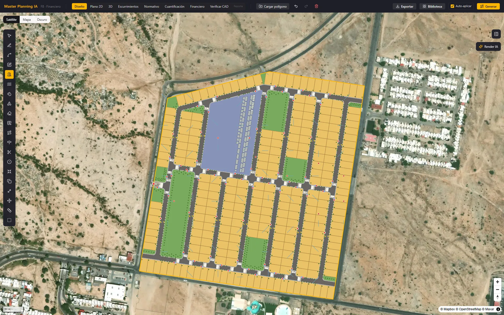
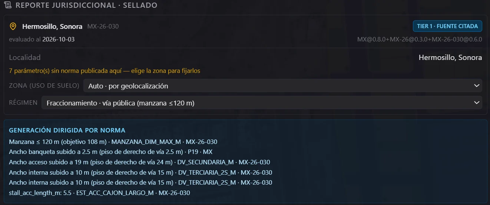
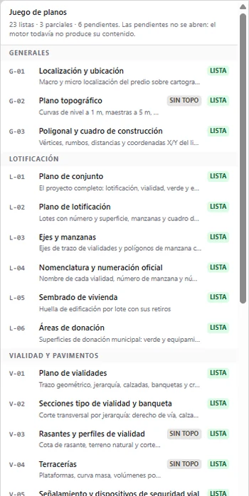
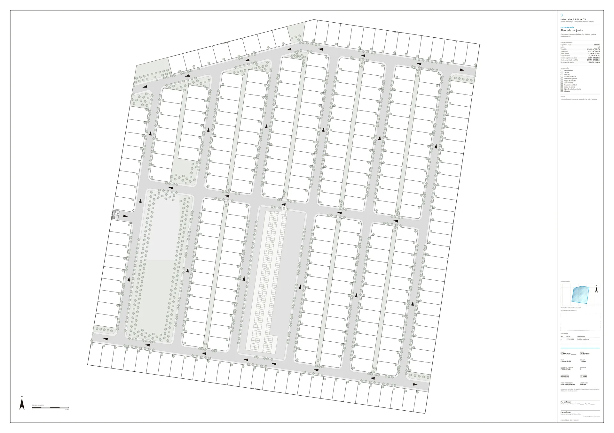

Factibilidad y rendimiento de suelo, en una fracción del plazo tradicional.
Desde el polígono de tu terreno, nuestro motor traza en minutos el fraccionamiento completo y te dice cuántos lotes vendibles da, cuánto vale y qué permite la norma de tu municipio, con el artículo citado. Y si tu equipo ya lo diseñó en AutoCAD, revisamos el plano antes de que lo ingreses al municipio y te decimos qué corregir.

- Normativa integrada
- HermosilloROU 2025 y PMDU 2023, por zona Guaymas–San Carlos · Empalmeprograma de desarrollo urbano, por zona Guadalajara · Zapopan · Tlajomulco · Puerto Vallartazonificación, por zona NOM-004-SEDATU-2023
En desarrollo de suelo, el error se paga dos veces: en lotes que no salen y en meses de ventanilla.
Corregir en la ventanilla cuesta meses de crédito puente, y un trazo que no aprovecha el terreno deja lotes sin vender para siempre. El problema no es dibujar: es saber, antes de dibujar, cuánto rinde el terreno y qué permite exactamente la norma de ese municipio este año.
El proceso tradicional
Donde se va el tiempo
En un proyecto reciente, el anteproyecto de un fraccionamiento se estimó de 6 a 8 meses. Decisiones de millones tomadas sobre una o dos iteraciones, porque no hay tiempo para más.
Reglamentos densos que cambian por municipio y por año. Los errores aparecen tarde, en la revisión de congruencia.
El terreno real entra al proyecto cuando rediseñar ya es caro: plataformas, rasantes y drenaje se resuelven al final.
La pro forma vive en un Excel aparte del plano. Nadie sabe cuánto vale cada decisión de trazo hasta meses después.
Con Master Planning IA
Rendimiento del suelo, con la norma adentro
Del polígono al master plan completo —vialidades, lotificación, usos, áreas verdes y equipamiento— en minutos y con su dictamen, y otra vez con cada cambio que quieras probar.
Las reglas medibles se aplican al generar y el dictamen revisa el resultado completo: lo que cumple, lo que no y lo que no se pudo evaluar, cada uno con su artículo y su vigencia. Tu DRO puede comprobarlo por su cuenta.
Topografía con un clic (modelo de elevación público o tu levantamiento), plataformas, corte y relleno en m³, y rasantes conforme a la norma de drenaje.
Costo por m², valor del inventario, ROI, TIR y VAN se recalculan con cada trazo. Sabes cuánto vale cada alternativa antes de decidir.
Del polígono al anteproyecto, en cinco pasos.
El orden importa: la norma entra antes que la geometría, no después. Por eso el plan no se corrige al final: nace con las reglas medibles aplicadas, y lo que no pudo resolver te lo dice.
DWG, DXF o KML, con el acceso y el producto que tienes en mente. El motor resuelve solo en qué municipio y en qué zona está el predio.
Topografía desde el modelo de elevación público, o desde tu levantamiento con dron si lo tienes.
Malla vial jerárquica, lotificación con frente a calle garantizado, usos, arbolado y cajones, con sus indicadores.
Alternativas conformes, lado a lado. Ajustamos calles, glorietas, retornos, manzanas y lotes con tu criterio, en cada ronda.
DXF por capas listo para plotear, GeoJSON, reporte normativo con artículos citados y análisis financiero, según el servicio.
Dos módulos, un motor: factibilidad antes de comprar, revisión antes de ingresar.
El generador parte del polígono y produce el master plan con su rendimiento: la factibilidad antes de comprar. El verificador toma el CAD que tu equipo ya dibujó y lo revisa antes de ingresarlo a la ventanilla. Los dos leen la misma normativa municipal verificada, y los operamos nosotros: tú recibes el resultado.
Generación proceduralDel polígono al master plan completo ▸
Motor geométrico determinista: no es un generador de imágenes. Traza la malla vial jerárquica con secciones tipo, radios de giro y retornos; lotifica cada manzana con frente a calle garantizado; y distribuye los usos —vendible, vialidad, parques, equipamiento y donaciones— con su cuadro de áreas.
La sección de cada vialidad se resuelve contra el mínimo legal que aplica a su jerarquía y a su sentido de circulación, no contra un ancho genérico. Cada lote nace con frente a calle, y el cuadro de áreas señala el que queda fuera de tolerancia.
Datos reales del predio de ejemplo · 29 oct 2026
Verificar CAD¿Ya tienes el proyecto dibujado? Lo revisamos antes de que lo ingreses ▸
Nos mandas el DXF de tu lotificación —diseñada por tu equipo, en tu AutoCAD— y en 3 días hábiles recibes el reporte de revisión normativa: capas clasificadas, jurisdicción y zona resueltas, cada criterio con su documento, artículo y vigencia, el plano anotado y la lista de correcciones. Cero cambio en tu flujo de diseño.
Funciona incluso con planos sin disciplina de capas: cuando los nombres no dicen nada, la clasificación cae a la geometría, y lo ambiguo —como la jerarquía de cada calle— se confirma contigo antes de revisar. Y distingue lo medible de lo discrecional: si un dato no viene en el CAD, se marca como no evaluable en vez de inventar un incumplimiento.
Salida real del motor sobre un plano dibujado para la muestra, sin cliente · 28 oct 2026
Motor normativoLa norma como dato verificado, con cita y vigencia ▸
La normativa de cada municipio vive en la plataforma como datos contrastados contra el texto vigente —reglamento de ordenamiento urbano, programa de desarrollo urbano, boletines oficiales y normas federales— resueltos en cascada de nación a estado a municipio, incluida la zona del programa de desarrollo urbano que le toca a tu predio.
Y distingue el régimen. En Hermosillo la manzana está topada a 120 m cuando la vialidad es pública, pero un condominio de calles privadas no queda sujeto a ese tope. La plataforma genera lo que es legal en tu régimen, no la versión más conservadora por defecto.
«…que no puede exceder de dimensiones de 120 metros»
Art. 3, fracc. XXXI · Reglamento de Ordenamiento, Desarrollo Urbano y del Espacio Público de Hermosillo · Boletín Oficial del Estado de Sonora, 21-mar-2025
Captura real · Hermosillo MX-26-030 · evaluado el 3 oct 2026
Topografía y terraceríasEl terreno real, antes de comprar el predio ▸
Partimos del modelo de elevación público o de tu levantamiento. El motor calcula curvas de nivel, pendientes, plataformas por manzana, volúmenes de corte y relleno con su balance, y rasantes viales conformes a la norma de drenaje pluvial. Con el modelo público los volúmenes son preliminares; con tu levantamiento, más precisos.
Suma el análisis hidrológico —escurrimientos superficiales y zonas de encharcamiento— para que la decisión de compra se tome con el terreno adentro, no después.
vista ilustrativa · cifras de ejemplo
Redes e infraestructuraRed eléctrica y alumbrado, con la restricción local adentro ▸
La plataforma calcula la carga eléctrica del conjunto, coloca los transformadores y las luminarias sobre la estructura vial ya generada y verifica el alumbrado contra la NOM-013. El trazo de los circuitos se completa con las especificaciones de la comisión de electricidad para cada desarrollo.
Aquí es donde el motor normativo paga: en Hermosillo, el reglamento prohíbe la red aérea en desarrollos nuevos. Un trazo hecho por costumbre la pone aérea y el proyecto regresa de la ventanilla. La plataforma lo resuelve subterráneo desde el principio y cita el artículo que lo obliga.
vista ilustrativa
Editor con memoriaTu criterio de diseño, en cada ronda ▸
Ajustamos calles, retornos, glorietas, manzanas, lotes y el perímetro con tus observaciones, con precisión de CAD: imán a esquinas, aristas, banqueta y calzada.
A diferencia de un generador de una sola pasada, cada ajuste queda registrado y se vuelve a aplicar al regenerar el plan, y cada versión se revisa otra vez contra la norma antes de entregártela.
vista ilustrativa
Optimización de vendibleAlternativas conformes que compiten por tu ROI ▸
El motor prueba decenas de configuraciones y busca el mayor porcentaje vendible respetando los pisos normativos. Te presentamos las alternativas conformes, cada una con sus indicadores, para que elijas la mejor.
Cada alternativa llega con sus indicadores y su resultado normativo, al lado del plano base: si no lo mejora o rompe la norma, lo ves antes de decidir.
vista ilustrativa
Cuantificación y pro formaCada trazo, valuado al instante ▸
La geometría se convierte en números de obra: cuantificación por partidas, metros lineales de vialidad y banqueta, y presupuesto paramétrico de urbanización. Sobre eso corre la pro forma: costo por m², valor del inventario vendible, ROI, TIR y VAN preliminares.
Cada alternativa trae sus números, así la decisión con tu comité de inversión se toma sobre el mismo estudio.
Datos reales del predio de ejemplo · 29 oct 2026
Entregables y firmaLo que te entregamos, y quién lo firma ▸
DXF por capas para AutoCAD y Civil 3D, el juego de planos en PDF A1 con cajetín y escala, el terreno en LandXML, GeoJSON para tu GIS, el modelo 3D para Twinmotion o Blender y reportes en PDF: dictamen normativo con artículos citados, cuantificación y análisis financiero. El master plan es tuyo y vive en tus herramientas.
Te entregamos el reporte con la evidencia citada; tu director responsable lo revisa y firma con esa evidencia en la mano. La responsiva es suya: ningún entregable la sustituye, ni a la autorización municipal.

Captura real · índice del juego de planos: 32 láminas, 23 incluidas, 3 parciales y 6 de especialidad
Una lámina lista para el expediente.
Cada proyecto sale como un juego de planos con cartucho, cuadro de datos y cotas. Esta es la hoja L-01, plano de conjunto, tal como la genera la plataforma para el mismo predio de 22.6 ha.

Razón social, folio, fecha, hoja, escala, jurisdicción y sistema de coordenadas UTM.
Superficie bruta, lotes, vendible, vialidades, áreas verdes y equipamiento, calculados por el motor.
Localización, lotificación, vialidades, secciones tipo y más: hasta 32 láminas por proyecto, cada una con su estado.
Hecho para urbanizar suelo en México. No adaptado desde otro mercado.
Las herramientas globales resuelven factibilidad con la normativa de Estados Unidos, y un anteproyecto tradicional toma meses. Nosotros hacemos una sola cosa: fraccionamientos con la norma mexicana citada, optimizados a vendible, junto al despacho o al equipo que ya tienes.
| Master Planning IA | TestFit | Autodesk Forma | Proceso tradicional | |
|---|---|---|---|---|
| Enfoque | Lotificación horizontal con norma mexicana adentro | Factibilidad con zonificación de EE. UU., incluida lotificación unifamiliar | Análisis ambiental temprano | Trazo y revisión manuales |
| Cumplimiento normativo mexicano | Por construcción, con artículo citado | — | — | Manual, según quién revisa |
| Régimen condominio vs. fraccionamiento | Distingue lo que cada uno permite | — | — | Según la experiencia del equipo |
| Verificar un CAD ya diseñado | Revisa tu DXF y entrega el plano anotado | — | — | Revisión manual |
| Topografía y movimiento de tierras | Elevación con un clic, m³ y rasantes | Corte y relleno básico | — | Estudio aparte |
| Pro forma integrada | ROI · TIR · VAN | Rendimiento sobre costo | — | Semanas después |
| Plan completo con dictamen normativo | 5 días hábiles; el motor, en minutos | Sin norma mexicana | Sin norma mexicana | Meses |
| Español y soporte local | Nativo | — | — | Sí |
Las plataformas globales resuelven factibilidad con la zonificación de otro país. Master Planning IA resuelve fraccionamientos con la norma de tu municipio, citada.La diferencia no es el algoritmo: es de quién es la norma
Tres servicios, un mismo motor.
Nosotros operamos la plataforma y tú recibes el resultado, con la norma de tu municipio citada. Cambia el momento del proyecto y el entregable; el criterio es el mismo.
Revisión normativa del proyecto
Ya tienes el proyecto trazado y quieres saber qué te van a observar.
$45,000 MXN + IVA
· predio de 3 a 15 ha · 3 días hábiles
- Cada criterio que el plano permite verificar, con documento, artículo y vigencia
- Plano anotado y lista de correcciones en orden de importancia
- Lo que no se puede evaluar desde el plano, con su motivo
- Junta de 30 minutos y una re-revisión del plano corregido
Análisis de factibilidad
Tienes o evalúas un predio y necesitas decidir: cuántos lotes, qué traza y si los números dan.
$95,000 MXN + IVA
· predio de 3 a 15 ha · 5 días hábiles
- Tres alternativas de traza comparadas a la misma escala
- Reparto completo del terreno: vendible, vialidades, áreas verdes y equipamiento
- Revisión normativa de lo medible, con artículo y fuente
- Cuantificación preliminar de la urbanización y pro forma
Anteproyecto llave en mano
Decidiste desarrollar y necesitas el proyecto urbano completo.
$83,000 MXN por ha + IVA
por ha · mínimo $350,000 MXN () · 6 a 11 semanas
- Traza, lotificación, vialidad y cesiones, con dictamen normativo citado
- Terracerías, rasantes e hidrología
- Juego de planos A1, cuantificación, tabla de lotes y memoria de alumbrado
- CAD y SIG georreferenciados, para que tu director responsable lo revise y, en su caso, lo firme
Se encadenan. Lo pagado por la revisión se acredita al 100 % a la factibilidad o al llave en mano, y lo pagado por la factibilidad, al llave en mano, si se contratan dentro de los 60 días siguientes.
Precio por superficie, plazos y forma de pago
| Revisión normativa | Análisis de factibilidad | Anteproyecto llave en mano | |
|---|---|---|---|
| Menos de 3 ha | $30,000 | $65,000 | Mínimo $350,000 |
| 3 a 15 ha | $45,000 | $95,000 | $83,000 por ha por ha · mínimo $350,000 |
| 15 a 50 ha | $45,000 + $2,000 por ha excedente por ha excedente | $95,000 + $4,000 por ha excedente por ha excedente | $83,000 por ha por ha |
| Más de 50 ha | Por cotización | Por cotización | $83,000 por ha por ha |
| Plazo | 3 días hábiles desde el DXF con capas legibles y la ubicación; la re-revisión, en 2 | 5 días hábiles desde el polígono y el objetivo del proyecto | Hasta 10 ha, 6 a 7 semanas; de 10 a 30 ha, 7 a 9; de 30 a 60 ha, 9 a 11; más de 60 ha, por propuesta |
| Forma de pago | 50 % al pedido y 50 % a la entrega | 50 % al pedido y 50 % a la entrega | 40 % a la firma, 30 % al aprobar el esquema y 30 % a la entrega |
| Además | Re-revisión adicional, $12,000 . Paquete de 5 revisiones en 12 meses (3 a 15 ha cada una), $180,000 | Junta de 30 minutos para revisarlo | Partida 1 · proyecto urbano, $62,000 por ha. Partida 2 · terracerías, rasantes e hidrología, $21,000 por ha |
Importes antes de IVA (16 %), sobre la superficie bruta del predio. Los plazos corren desde los insumos completos y se recorren día por día si llegan tarde. Precio firme: no cambia por horas invertidas ni por las iteraciones dentro del alcance contratado.
Diagnóstico preliminar
sin costoMándanos el DXF de un fraccionamiento, en diseño o ya construido (si trabajas en DWG, basta con guardarlo como DXF), con su ubicación. Lo corremos contra el motor y te decimos cuántos lotes y qué porcentaje vendible da, cuántas observaciones normativas tiene y cuáles son las tres principales, con su artículo, y cuántos criterios no se pueden evaluar desde el plano.
Te llega por correo en dos días hábiles, por orden de llegada, con marca de agua y sin archivos CAD; si quieres, lo revisamos juntos en 20 minutos. Es preliminar: la lista completa, el plano anotado y la re-revisión son la revisión normativa del proyecto. Si el número no te mueve, nos ahorramos los dos una venta.
¿Tu equipo quiere operar la plataforma? Hoy la operamos nosotros: cada proyecto sale revisado por quien lo hizo, y cada uno deja algo en el motor —un caso de prueba, una jurisdicción integrada—. El acceso directo para equipos viene después; si te interesa, dínoslo en el formulario y te avisamos.
Lo que entra y lo que no. Dicho desde el principio.
En esta industria las sorpresas de alcance cuestan meses. Preferimos poner el límite por escrito antes de firmar que discutirlo después.
Sí incluye
En los tres servicios
- Normativa de tu municipio verificada y citada — integrada sin costo si aún no está en la plataforma; cada parámetro, con documento, artículo y fecha de vigencia.
- Vigencia fechada — cada reporte dice contra qué versión de la norma se revisó y en qué fecha.
- Mapeo de tus convenciones CAD — trabajamos con las capas que ya usa tu despacho.
- Entregables en tus formatos — DXF por capas editable, GeoJSON y PDF listos para el expediente.
- Distinción explícita entre lo medible y lo discrecional — te decimos qué no se pudo evaluar y por qué.
- Acompañamiento — una junta para revisar cada entrega y canal directo con quien hizo el trabajo.
No incluye
Corresponde a ti o a un tercero especialista
- Garantía de aprobación ante la autoridad. Entregamos análisis y evidencia trazable; la resolución la da la autoridad competente. Nadie honesto puede prometer lo contrario en criterios discrecionales.
- Asesoría legal ni representación en trámites, permisos o licencias.
- Responsiva técnica o firma de DRO. La firma es de tu director responsable: ningún entregable la sustituye.
- Ingenierías ejecutivas de detalle — hidrosanitaria, pluvial y la gestión ante la comisión de electricidad.
- Levantamiento topográfico, mecánica de suelos y estudios de impacto ambiental o vial.
- Derechos y pagos municipales, e integración con tus sistemas internos de ERP o BIM.
Sin levantamiento topográfico propio, las terracerías y la hidrología se desarrollan sobre modelo digital de elevación público, con precisión menor. Lo señalamos siempre en el entregable.
La empresa detrás del motor.
Urban Lytica S.A.P.I. de C.V. es una empresa de tecnología urbana con base en Hermosillo, Sonora. No solo construimos un producto, construimos un motor de factibilidad normativa, Master Planning IA, y lo dirige un arquitecto mexicano: José Gael Astorga Cárdenas, fundador y director general, que conoce la tramitación desde el lado de quien entrega el plano a la ventanilla municipal.
Por qué esto es defendible
Extraer texto normativo es barato y cualquiera puede hacerlo. Lo que no es barato es sostener un registro que un perito firme y que resista una impugnación. Ahí está el foso, en cuatro capas.
El mapa entre el plano que se somete y lo que el revisor realmente exigió —observaciones, condicionantes, motivos de rechazo— no existe en ningún texto público. Solo se acumula estando dentro del flujo, proyecto tras proyecto.
Cada parámetro carga su procedencia: documento, artículo, autoridad, versión y fecha. Esa cadena es lo que convierte un análisis en evidencia firmable, y es trabajo de años, no de un scraper.
Un raspado de datos se pudre: los reglamentos se reforman. Detectar la reforma y volver a correr los proyectos anteriores del cliente es, en sí mismo, el servicio recurrente que el mercado nos pidió.
El portafolio, los estándares internos y el historial de dictámenes del cliente terminan viviendo adentro. La prueba operativa que nos exigimos: que el trabajo del cliente N+1 salga más barato gracias a los clientes anteriores.
La forma de un fraccionamiento se decide una vez y condiciona a sus habitantes durante décadas: cuánto suelo se aprovecha, cuánta área verde queda, qué tan lejos está cada lote de un parque, si la ciudad se extiende o se consolida. Hoy esa decisión se toma con dos o tres alternativas dibujadas a mano y sin verificación normativa hasta el final. Bajar ese costo a minutos no es solo un ahorro para el desarrollador: es que la alternativa más conforme y mejor aprovechada deje de ser la más cara de explorar.
Lo que todos preguntan antes de empezar.
Doce respuestas, agrupadas por tema. Si la tuya no está aquí, escríbenos y te respondemos directamente.
Producto y normativa
¿Cómo verifican el cumplimiento normativo?
Las reglas medibles —tope de manzana, sección vial mínima, frente de lote, cesión— se aplican mientras se genera, y después el dictamen revisa el plan completo. Cada parámetro del motor tiene fuente documentada —reglamento municipal, boletín oficial, norma federal— y fecha de vigencia, y el reporte cita el artículo exacto que sustenta cada verificación normativa, incluidas las que no cumplen o no se pudieron evaluar. Tu DRO o el revisor municipal pueden comprobar cada cita por su cuenta. Esa trazabilidad es el producto.
¿Qué municipios cubren?
Hermosillo está integrado a detalle municipal —reglamento de ordenamiento urbano y programa de desarrollo urbano, con la zona que le toca a tu predio—. También Guaymas–San Carlos y Empalme, y en Jalisco, Guadalajara, Zapopan, Tlajomulco y Puerto Vallarta, con su zonificación por zona. Los 72 municipios de Sonora y los 125 de Jalisco están auditados: sabemos qué instrumento rige en cada uno. Si tu municipio aún no está integrado, lo integramos sin costo para tu proyecto; mientras tanto, el análisis usa la cascada estatal y federal aplicable, que es parcial —en Sonora, por ejemplo, la ley estatal fija la cesión, pero las medidas de manzana, lote y vialidad son municipales—, y lo marca como preliminar de forma explícita: nunca te presentamos como verificado algo que no lo está. Si el reglamento no está publicado, integramos lo disponible y te decimos qué documento hace falta.
¿Entienden la diferencia entre fraccionamiento y condominio?
Sí, y es de las cosas que más valor devuelve. En Hermosillo la manzana está topada a 120 metros cuando la vialidad es pública, pero un condominio de calles privadas no queda sujeto a ese tope. Muchas herramientas, y no pocos procesos, aplican el criterio más conservador a todo, y eso deja metros vendibles sobre la mesa. La plataforma resuelve el régimen que le indiques y genera lo que es legal en ese régimen, citando el artículo que lo permite.
¿Es una IA generativa tipo caja negra?
No. El corazón es un motor geométrico determinista: la misma entrada produce siempre la misma salida, y cada decisión del plan es trazable a un parámetro con fuente. La inteligencia artificial se usa donde aporta —la búsqueda de alternativas óptimas— nunca para inventar geometría o normativa. Por eso el resultado es auditable y defendible ante un municipio.
¿Puedo verificar un proyecto que ya tengo diseñado?
Sí: es la revisión normativa del proyecto. Nos mandas el DXF con la ubicación; leemos y clasificamos las capas, confirmamos contigo lo ambiguo y la jerarquía de cada calle, y en 3 días hábiles recibes el reporte de revisión normativa con cada criterio citado, el plano anotado y la lista de correcciones. Incluye una junta de 30 minutos y una re-revisión del plano corregido. Si primero quieres ver el tamaño del problema, el diagnóstico preliminar es sin costo.
¿En qué formatos entregan?
DXF por capas compatible con AutoCAD y Civil 3D, incluidos cortes, escurrimientos y terreno; el juego de planos en PDF A1 con cajetín y escala; el terreno en LandXML; GeoJSON para GIS; el modelo 3D en glTF para Twinmotion o Blender; y reportes en PDF de verificación normativa con citas, cuantificación y análisis financiero. El master plan que te entregamos es tuyo y vive en tus herramientas.
Contratación y responsabilidad
¿Esto reemplaza a mi equipo de diseño o a mi despacho?
No. Tu equipo decide; nosotros le quitamos la parte lenta y riesgosa: verificar contra una normativa que cambia cada año, iterar trazos a mano y recalcular números. Los equipos que ya tienen su proceso de diseño nos mandan su plano para la revisión normativa: siguen diseñando en AutoCAD y nosotros revisamos el cumplimiento antes de que lo ingresen, sin cambiar su flujo de trabajo.
¿Quién firma el proyecto?
El responsable del proyecto —tu DRO o perito— firma, como siempre. Le entregamos el reporte con la evidencia citada para que firme con respaldo; ningún entregable sustituye su responsiva ni la autorización municipal.
¿Lo que pague por un servicio se acredita al siguiente?
Sí. Lo pagado por la revisión normativa se acredita al 100 % a la factibilidad o al anteproyecto llave en mano, y lo pagado por la factibilidad, al llave en mano, si los contratas dentro de los 60 días siguientes.
Lo que nadie puede garantizar es la aprobación de un proyecto: los criterios discrecionales de la autoridad no admiten esa promesa. Lo que sí queda por escrito en la propuesta son el alcance, el plazo y el precio.
¿Qué pasa con los datos de mis proyectos?
Son confidenciales y siguen siendo tuyos. Los entregables pagados son propiedad del cliente; el motor y los parámetros genéricos son de Urban Lytica. Cualquier uso agregado y anonimizado para mejorar el motor se pacta con cláusula explícita en el contrato, nunca por defecto.
¿Cuánto tarda?
La revisión normativa, en 3 días hábiles desde tu DXF; el análisis de factibilidad, en 5 días hábiles desde el polígono y el objetivo; el anteproyecto llave en mano, de 6 a 11 semanas según la superficie —hasta 10 ha, 6 a 7; de 10 a 30 ha, 7 a 9; de 30 a 60 ha, 9 a 11; más de 60 ha, por propuesta—. Todo se cuenta desde que recibimos tus insumos completos, y los plazos se recorren día por día si llegan tarde: eso queda escrito en la propuesta en vez de asumirse, porque es la parte que más se descuida y la que más proyectos descarrila. Si tu municipio aún no está integrado, lo integramos sin costo y te decimos el plazo al cotizar.
¿Puedo contratar el software y operarlo yo?
Todavía no. Hoy operamos la plataforma nosotros y tú recibes el resultado: así cada proyecto sale revisado por quien lo hizo, y cada uno deja algo en el motor —un caso de prueba, una jurisdicción integrada—. El acceso directo para equipos viene después; si te interesa, dínoslo en el formulario y te avisamos.
Hablemos de tu próximo desarrollo.
Pide tu diagnóstico sin costo, agenda una demostración con tu propio predio o cotiza una revisión normativa, un análisis de factibilidad o un anteproyecto llave en mano — o hablemos de inversión.